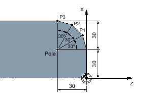

You can specify positions using right-angled coordinates or polar coordinates.
If a point in a workpiece drawing is defined by a value for each coordinate axis, you can easily input the position into the parameter screen form using right-angled coordinates. For workpieces that are dimensioned with arcs or angular data, it is often easier if you input the positions using polar coordinates.
You can only program polar coordinates for the functions "Straight circle" and "Contour milling."
The point from which dimensioning starts in polar coordinates is called the "pole".
Polar coordinates
The position specifications for the pole and points P1 to P3 in polar coordinates are:
Pole: X30 Z30 (relative to the zero point)
P1: L30 α30° (relative to the pole)
P2: L30 α60° (relative to the pole)
P3: L30 α90° (relative to the pole)